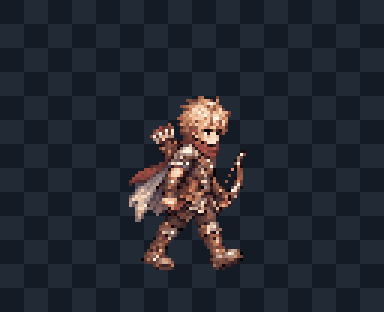
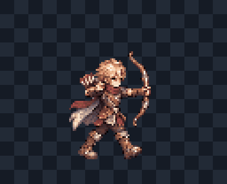
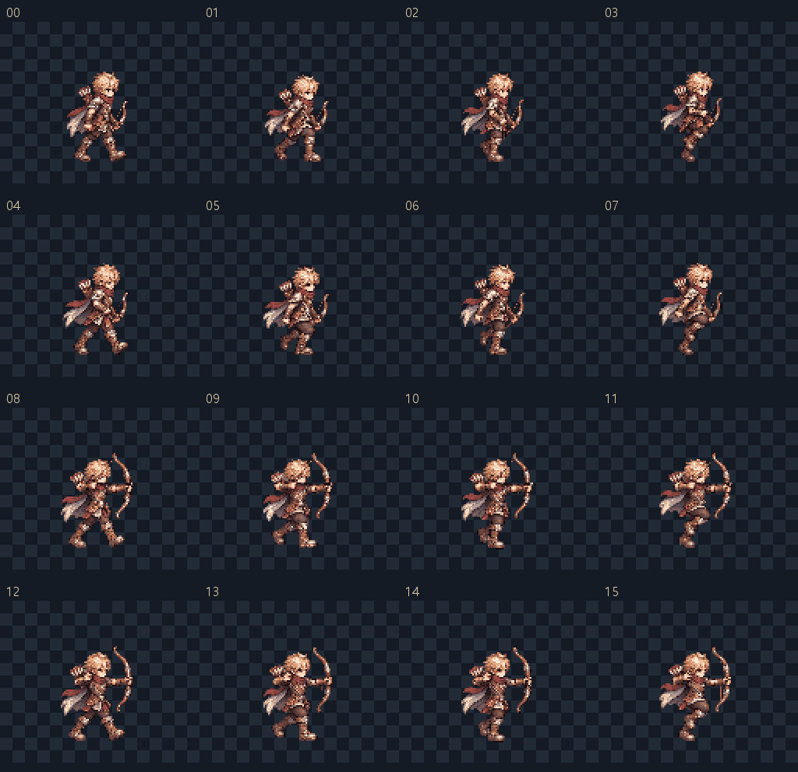

같은 걸음을 유지하며 활을 쏘기
보행8·이동 사격8프레임의 로컬 연결 자료입니다. 전신 포즈로 구성해 임의의 상·하체 이음새를 피했습니다. 아래GIF는 핵심 자세를 고정 시간으로 보는 시안이며 실제 게임 검증 결과가 아닙니다.
보행8

보행 → 당김 → 발사
당긴 채 이동
발사 직후 이동

논리1×·명암 비교
가로로 스크롤해서 보세요. 몸체58px, 같은 팔레트·발 기준입니다.
2× 확대

이미지 정적 확인만 통과했습니다. 새 게임 테스트·구문 검사·브라우저/실기기·성능 검증·푸시·배포는 하지 않았습니다. 미세 체적·루트·방향 전환은 후속 검증 대상입니다.
구현·제약 · 전체 생성 프롬프트 · 출처·좌표·제품아틀라스 · 위상 대응 근거